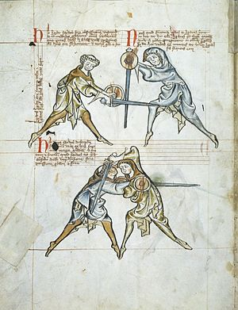
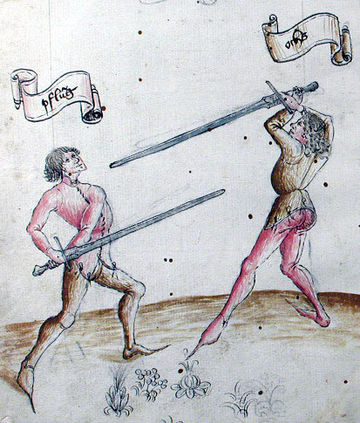

Brief History of Historical European martial Arts
There are no known manuals predating the Late Middle Ages, although Medieval literature record specific martial deeds and military knowledge; in addition, historical artwork depicts combat and weaponry.Some researchers have attempted to reconstruct older fighting methods such as Pankration, Byzantine Hoplomachia,Viking Swordsmanship and Gladiatorial Combat by reference to these sources and practical experimentation.
The central figure of late medieval martial arts, at least in Germany, is Johannes Liechtenauer. Though no manuscript written by him is known to have survived, his teachings were first recorded in the late 14th century MS 3227a. From the 15th century into the 17th, numerous Fechtbücher were produced, of which some several hundred are extant; a great many of these describe methods descended from Liechtenauer's.
Normally, several modes of combat were taught alongside one another, typically unarmed grappling (Kampfringen or abrazare), dagger, long knife or Dussack, half- or quarterstaff, pole arms, longsword, and combat in plate armour, both on foot and on horseback. Some Fechtbücher have sections on dueling shields, special weapons used only in judicial duels.
Important 15th-century German fencing masters include Sigmund Ringeck, Peter von Danzig, Hans Talhoffer and Paulus Kal, all of whom taught the teachings of Liechtenhauer. From the late 15th century, there were "brotherhoods" of fencers, most notably the Marx brothers and the Federfechter.
¬ Extract taken from wikipedia .